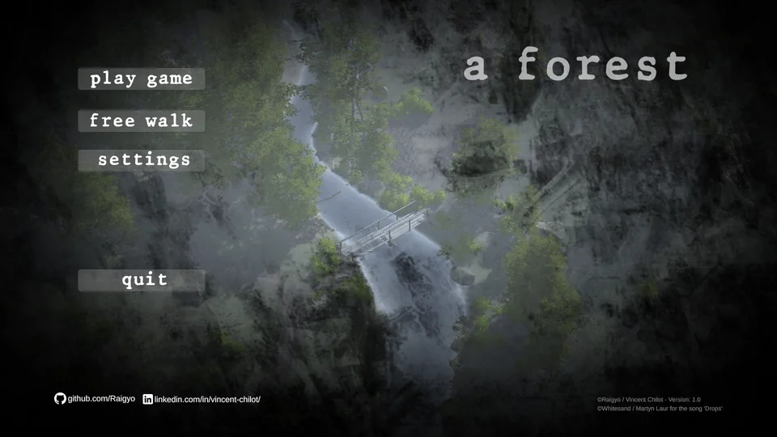
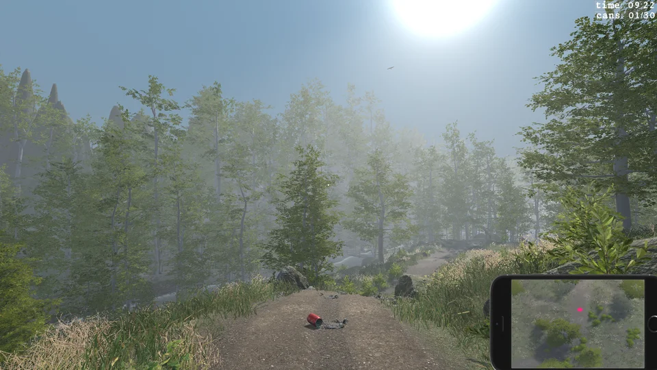

Game made with Unity 3D. In this game you walk in a forest and you decided to clean the rubbish to preserve nature.
So pick up all the soda cans in the allotted time. It's an original game, not inspired by a tutorial.
By the way I used tons of tutorials and websites to help during the development. The gameplay is quite basic, but the mecanics including navigation, introduction, sound design are the same than in a commercial game. The 3D environments and animations are quite high grade quality.
Github repository:
unity-3d-game-forest
Windows download:
A Forest [0.98Gb]
Apple download:
A Forest [1.00Gb]